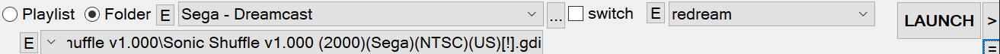
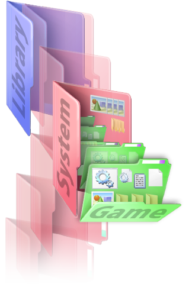

A unified interface for ROMs, emulators and frontends.
for Windows
Installer
(recommended)
size:
SHA1 :
This is the compressed skeletonKey executable.
Extract into a skeletonKey directory overwriting any existing files and run the skeletonKey.exe.
Website: http://romjacket.github.io/skeletonkey/index.html
Source code: Github Page
Resources and Releases: Release Page
Released :

Donate to recieve a Golden skeletonKey
- A comprehensive, easy to use & compact GUI
- Drag & Drop ROMs to launch & create playlists.
- Leverages internet ROM repositories for netplay automation
- Global and granular control over libraires of ROMs.
- Deploy a gaming environment to a portable device such as a flash-drive.
- Mirror your saves and save-states into a cloud (Dropbox/GDrive/OneDrive)
- Convert ROMs to a Windows executable
- Download, install & setup HTPC frontends, emulators and joystick mapping programs.
To Do:
- Mirrored Link Integration.
- retroArch GUI presets.
-
Cloud-state/mem-saving.
- Gamepad-driven disk-menus.
- Scraped Metadata
Propagation
SkeletonKey functions both as a ROM launcher and as a configuration tool for HTPC frontends.
ROMs can be launched quickly in many ways:
- Drag & drop a ROM file to the desktop icon,
- Drag & drop a ROM into the main tab
- Categorically filtered from playlists, ROM directories or search functions.
- Downloaded from a ROM repository
- From the command line
As a configuration tool, skeletonKey can deploy a ROM-library that meets the expectations of users who desire a means to maintain the integrity of settings and assets indipendently of a frontend or emulator.
Nearly every skeletonKey option has a mouse-over tool-tip . Operational feedback appears in the statusbar at the bottom of the window.
Basic Overview
After installing skeletonKey, use the "EMU :=: SYS" tab to import your systems and emulators, or download new ones.
Command-Line
An emulator-preset can be specified to override any default association from the command-line.
SkeletonKey accepts the option -run= followed by the nickname of the emulator preset
followed by the path to the rom. Any options specified by the preset are respected.
SkeletonKey launched from the command line without the -run= option
functions identically to drag'n drop.
...nkey>
skeletonKey.exe -run=NickName "C:\Library\Console Name\Rom Name\rom file.rom"
**Nicknames must not contain spaces**
Options to reset and initialize skeletonKey:
-clearrj will reset the ROM-Jacket system-setup preferences and queue-clearcfg will reset the per-game settings for all skeletonkey
launcher presets :: (not ROM-Jackets)-clearset will reset the skeletonkey program settings-clearra will reset global retroarch settings-clearexe will reset emulator executable settings-clearscrape will delete scraped art and assetsadding a
!q
to the end of your clear command will override and assume yes on all deletion queries.eg
-clearra!qThe Skey-Deploy utility accepts the following:
-reset command to reset the while keeping credentials for github.-gituser=USERNAME your git username (must be the first
argument).-gitpass=PASSWORD your git password (must be the 2nd
argument).-gittoken=TOKEN-STRING your git authentication token (must be
the 3rd argument).
Program Settings
The settings tab is for the location for your systems, emulators, playlists and other environment-options.
Auto-Load Per-Game Settings
SkeletonKey will automatically load any per-game settings previously created and create settings for the currently selected title upon launch if none are detected.
Systems Directory
Systems follow the no-intro naming nomenclature wherever possible.
Jackets and frontends deployed by
skeletonKey can be populated with ROMs categorically stored beneath the systems directory.
Emulators Directory
By default, all emulators will be installed to the Emulator Directory. Upon assigning a directory to the Emulators Directory, skeletonKey will search subdirectories for previously installed known emulators not currently identified or manually assigned.
Temp/Cache Directory
By default, the temp/cache directory is set to windows temp folder "%temp%".
History/Playlists
The history file contains a list of the ROMs launched by skeletonKey. Additionally the history file and playlists created by skeletonKey store the emulator or core assigned to it.
The history file and playlists can be read by retroArch and can share these interchangeably.
Options are categorized by type. The Launch tab is responsive and will populate options for the currently selected supported emulator. Any previous settings for the currently selected ROM are loaded.
Global-Launch-Menu
The Launch menu items persist across emulator settings populated in the Main tab. These items are at the top of the window and are necessary to browse directories, navigate playlists and launch a ROM.

The Global-Launch-Menu includes:
- the System List dropdown for directories & toggle for playlists
- the ROM selector button
- the EMU dropdown menu
- the"swtiches" toggle
- the editable selection menu containing items in the currently selected playlist or directory
- the "C" configure button
- A split
LAUNCH ::>button
System List
The folder/playlist toggle will toggle this dropdown between playlist files and the current system libraries. System Lists contain any folders found in the Systems ROOT directory and any systems which have been appended by the user .This can be filtered to display only detected and created systems.
Changing the system will automatically populate the ROM List with detected ROMs, load the emulator/core-associated preferences and then populate the tab with options if available.
Right-Click on this dropdown to configure it.
The switches toggle will expose options & arguments fields for emulators. These are pre-packed with many options and arguments, however spaces should be observed when plugging in your own switches.
LAUNCH
The ROM currently in ROM-List will be launched by the emulator/core in the EMU-List.
::>
A quick-launch selection set of all assigned presets and known compatible presets will appear in a dropdown menu
This menu can also be accessed via right-clicking on the LAUNCH button.
ROM List
The editable dropdown menu contains a list of all ROMs in the current system/playlist dropdown menu.
If the auto-load setting is enabled, whenever a new ROM is selected, the configuration files for that ROM will have values populate the tab.
A new configuration will be generated in the ROMs' configuration folder if one is not found.
(eg:\...\skeletonkey\cfg\Microsoft - DOS\msds_dosbox\TMNT\dosbox.conf).
EMU List
The EMU list is a core/emulator dropdown which contains a list of all cores, all
nicknames for system-associations, and all emuators.
Changing the core/emulator
dropdown will dynamically populate the Main tab with options
for the emulator/core (if supported) and any load existing settings the title may have.
Right-Clicking on this menu enables assignment and configuration.
RetroArch, MAME, Snes9x & Mednafen are currently supported.
[X] Clear button
Clears all current launch options. Right-click on this to delete ROM settings for the currently selected emulator/core.
Emulator Configuration Options
These options are dynamically loaded for each emulator. Settings changed by the user at run-time should load and populate the GUI after lauching.
Drag & Drop
Drag & Drop a ROM into the Main tab and with the Auto-Launch option enabled, skeletonKey will detect the ROM and launch it using the system's associated emulator, or bring forth the menu if undetected/Auto-Launch is disabled.
Search & Find
The "find" button can be found in the lower right hand corner of the tab and will expand
the search fields.
skeletonKey can search for ROMs in your "Systems" directories or
playlists.
Selecting a title will
repopulate the System-List & make it active in the ROM list.
A right-click menu allows for a single ROM to be launched by any installed emulator or it's directory opened by windows explorer. Additionally, multiple files can be selected and added to the current playlist.
RetroArch, Systems, Emulators, Frontends & Utilities
SkeletonKey can be used to quickly install emulators, frontends, retroArch and utilities. The Install Tab is also used to associate skeletonKey's systems with emulators and retroArch cores when using skeletonKey as a launcher.
Installing RetroArch & cores
RetroArch and components can be installed separately or as a single package (stable). The "RetroArch" list item includes all components needed by retroArch. The most recent nightly build as well as the stable version are available. A core-upate button will check for cores with updates to upgrade en-masse.
RetroArch is tightly integrated into skeletonKey with an exhaustive set of options and exclusive features for netplay. By default the most compatible core is selected as the skeletonkey's primary association for most of retroarch's supported systems. The GUI interface for retroArch is dynamic, responding after any changes made during gameplay.
RetroArch's "core_assets_directory" should be assigned to the [Systems ROOT] folder.
The playlist_directory and content_history_path (history file)
should also be shared with skeletonKey.
Installing BIOS Files
Drag & Drop BIOS files or a BIOS pack (.7z .zip .rar) to automatically install them to their proper places in supported emulators directories. An "AUTO" Button will appear for supported repositories which will download and install BIOS files for any emulators identified.
Emulators
SkeletonKey can install hundreds of emulators. Supported emulators can be configured indipendently (for per-game settings too!!!) as they are launched by skeletonKey and as emulators assigned to ROM-Jackets. Each emulator can be assigned via drag and drop.
Systems / ROM Directories
Selecting "Systems" from the dropdown menu will allow users to define directories containing ROMs. Users may append multiple ROM directories for a single system for over 400 recognized systems. Drag and drop is supported for multiple selected systems and folders.
Emulator & System Associations
The Associations section of the Install tab can be used to change the association of a system to a core, an emulator or nickname.
Systems are defined in part by file-extensions exclusive to the system. Because an emulator may have multiple system-assocations, a unique "system identifier" nickname can be created to define exclusive paramaters.
Skeletonkey can detect and assign emulators or a designated retroArch core to a system/s, however it may be desireable to create and configure systems and associations manually. A unique system-identifier or "nickname" can be created to create custom systems and associated emulator-presets.
Associating an emulator to a system creates a unique set of preferences for the emulator and assigns this set a nickname which can also be assigned to other systems. Right clicking on the System List or emu/core dropdowns will bring up menus to quickly configure or associate systems with emulators and cores.
The default association defines how skeletonKey will automatically launch ROMs categorically, however multiple nicknames/emulators can be assigned to a system to populate quick-launch/right-click.
-options & "/arguments.[ext]"
Options, arguments, quotes, ROM-paths and the extension can be adjusted to suit an emulator's needs.
Spaces are observed for options, arguments and command-lines.
The < character must be escaped or it will be converted to a space.
[CUSTMOPT] & [CUSTMARG]
are special tags assigned to MAME and other emulators which allows skeletonKey to detect and automate the passing of
overriding-options and arguments at runtime via the "switches"
checkbox in the Global-Launch-Menu or Repository-Systems-Menu.
!!!!Enabling the "switches" override will deactivate preset options such as auto-system and ROM-type detection!!!!
Many MAME systems and several supported emulators options and arguments are available as presets for custom options & arguments.
Per-Game Configurations:
SkeletonKey can retain emulator settings for each game (configuration files, save-states, battery-saves/nvram) under supported emulators. Any changes that are made during gameplay will be saved.
Operational Details:
SkeletonKey copies and moves these configuration files back and forth between the emulator's folder and the per-game configuration folder before and after the emulator runs.Configuration files are stored inside a folder of the ROM's name. A folder for each system can be located in the skeletonKey installation folder under the "cfg" directory. EG:
\...\skeletonKey\cfg\System - Name\emulator\ROM Title\config.ini
For retroArch, per-game settings are stored in:
retroarch-folder\config\core name\ROM Title.cfg
ROMs dropped to the desktop icon which are not identified as belonging exclusively to a core/emulator will bring up a menu allowing users to quickly select a core/emulaor preset.
Drivers
Windows drivers and software needed by some hardware
Visual C++
Many emulators require these runtimes
DirectX
Required by many emulators.
XBox360 Drivers
This installs the XBox 360 Joystick drivers from Microsoft. These are needed for Windows Vista and 7.
SCP Wrapper for Dualshock Joysticks
The SCP Wrapper is a driver for bluetooth Sony Dualshock joysticks.
This is the most reliable and easiest way for DS3/4 users to use their joysticks in Windows 7/8x-10.
DS4Windows
DS4Windows is a Sony DualShock 4 driver for windows. It is installed however the configuration of this driver is left to the user.
Daemon Tools
For systems windowsXP->windows 8.x, skeletonKey can automatically install this program through the command-line which will NOT install the included toolbar or any additional software. Windows 10 users who need Daemon Tools should download and install it separately. Consider alternatives.
The Daemon Tools program may be needed by the SSF Sega Saturn emulator, the UNZ FM-Towns emulator and any emulator which cannot directly read cd/dvd image files. Mounting disc images with Daemon Tools is desireable for users who wish to switch disks reliably or have disc-images in formats unreadable by an emulator.
!!!!IMPORTANT!!!!
Open the Daemon Tools program.
If you do not have a SCSI drive in the list, add a SCSI drive.
Right click on the new drive icon.
select Device Paramaters
Uncheck Auto insert notification
Joystick Options
Joystick options are dynamic and respond to the currently selected supported input-remap system and
emulator.
RetroArch, MAME, Snes9x & Mednafen are currently supported.
Keyboard-Mappers
Many emulators have features such as rewind/fast-forward and save-state saving/loading which can be assigned to keyboard shortcuts.
Keyboard-mappers facilitate these features by allowing button combinations to trigger these keyboard shortcuts.
RoM-Jacket libraries require a keyboard-remapper for a seamless HTPC gaming frontend experience.
Xpadder
Xpadder is a very reliable and enhanced keyboard remapper. Presets are ubiquitous and abundant and skeletonKey has hundreds for many emulators ready to go for xinput devices.
Antimicro
Antimicro is opensource and extremely versitile.Antimicro is the preferred keyboard remapper by default.
Return Profile
Frontends may require a unique joystick profile to properly function. This profile is loaded when returning from a game.
Keyboard
Emulators in the initialized (default) state will map keyboard keys to the system's buttons and joystick directions. SkeletonKey can create profiles for these keys as they correspond for pc-joysticks to the native joystick layout of the machine. If the chosen console is a custom/unsupported system, a generic and multipurpose configuration is created.
Blank
causes an empty profile to be created for each game to disable xpadder/antimicro while the emulator is running. This is desirable for users who are processing a console with a custom emulator. You may choose to create a profile for your system and propagate it through the console's library using the Config Utility.
Joy
This is the default option for skeletonKey and creates a profile with only Emulator functionality mappings such as "Save/Load State" "Reset" "Exit/Power OFF" and unique functions such as "Rewind/Fast-forward. Emulators are configured to use directinput/xinput (XBOX 360 Joystick mappings).
Each frontend has a proprietary playlist format, however skeletonkey can convert retroArch to/from emulationStation playlists.
Drag and Drop ROMs to dynamically add files to playlists.
XMB : retroArch
SkeletonKey shares the playlist format with retroArch and can read and utilize retroArch playlist files natively.
Each item added to the playlist contains the name of the ROM, the path of the ROM, the crc hash of the ROM, the core/emulator name, path assignment, & the name of the playlist.
The core/emulator dropdown is assigned to the selected items when they are added to the playlist.
RetroArch's Per-Game Configuration Files
A template config file can be specified for the retroArch's per-game configuration files, otherwise current skeletonKey settings are used.
Playlist Options
Right-Clicking in the Playlist-Menu will allow selected items to change the core/emulator assignment for selected items.
Playlist Database
The playlist database is a cache containing all files in all playlists with their corresponding crc32 value.
EmulationStation
SkeletonKey can create and edit gamelist.xml files which can be to used cull ROM directories and display custom playlists. The existing es_systems.cfg will be loaded and inherited systems' directories will become available. Several options exist to populate gamelist.xml files with artwork and ROM metadata.
Like emulationStation's es_systems.cfg, emulationStation gamelists are xml files which contain standard metadata tags. Absolute paths to assets such as images and video files are accepted, however relative paths are also accepted, making the entire frontend portable across platforms (*nix/apple/windows). Assets can be arranged & named uniquely, however skeletonKey propagates assets to an emulationStation deployment which follows a local-layout.
- Box-Art files: ~/downloaded_images/[ROM_TITLE]-image.png
- Thumbnail images: ~/downloaded_images/[ROM_TITLE]-thumb.png
- Marquee images: ~/downloaded_images/[ROM_TITLE]-marquee.png
- Video snaps: ~/downloaded_images/[ROM_TITLE]-video.mp4
RetroFE
SkeletonKey can create and edit include/exclude files which can be to used cull ROM directories and display custom playlists.
RetroFE's playlist (collections) are very versitile and can contain many sub-collections.
Remote ROM repositories and libraries have been collated to be launched via this tab.
Right-Clicking on a selection of ROMs will allow metadata to be downloaded.
The Repository Tab can be used to list, search, download and emulate the ROMs available on remote repositories.
This tab is brought forward automatically under certain conditions while connecting to players listed in the netplay tab.
You must agree to the repository's EULA before downloading or allowing skeletonkey access to repository lists.
Repositories may contain contents which may be restricted in your juristiction. These contents include copyrited machine BIOS and game ROM files.
Options to download into a ROM-Jacket, manual overrides and extraction settings for compressed files can be combined in many ways to create custom libraries.
Right-Clicking on the emu/core dropdown will allow the ROM to be configured for the selected emulator/core.
Enabling the "Download Only" option will allow multiple files to be selected and queued.
MAME ROM-Lists can often contain ROMs which are incompatible with other emulators. MAME/MESS systems' ROM-Lists should be in the Your_Repository_Name\MAME - Systems subdirectory.
Have your own special list of ROMs you want to share with others?
Links to repositories can include a EULA for those who wish to distribute their own executables or ROM-Jackets.
>...\skeletonKey\gam\Your_Repository_Name\Your_List.gam
The following structures are observed for repository list files:
url|ROM title|options to pass to the emulator|alternate url|System-Name|torrent_index_number?filename:file2:file3:...|genre/genre2/...|login_toggle
Each line only needs to contain a direct link to a file.
The ROM title will be inferred from the filename if none is specified
eg: paramaters are pipe delimited, and a single space may be used to specify default/detected settings.
The Frontends tab contains configuration options for many different cabinet and couch-gaming frontends.
The right-click menu may be useful for users wishing to scrape artwork and create playlists.
Media
Asset-Management is a primary component of skeletonKey. Deploying a frontend means creating a unique data-structure, and because the arrangement and naming of assets and artwork vary from emulator to frontend, skeletonKey opts to prioritize a local-storage system (ROM-Jackets) to enable migration and deployment indipendently of any proprietary layout or theme sourced for a frontend.
SkeletonKey has a repository of photographic icons, full-HD images and large logos for 100 systems and can also "scrape" artwork from a multitude of hosts. Several databases are searched to obtain an array of image-types, video-snaps and metadata for thousands of titles spanning arcade, computer & console-systems.
Media Options
Selecting "Systems" in the Media interface will enable icons, logos, backdrops, videos and other media to be downloaded for selected systems. Alternatively, sets of these items can be downloaded. Themes for these items can be selected using the "Artwork Theme" dropdown.
Selecting "Jackets" in the Media interface will enable items to be downloaded for the selected ROM-Jackets.
Selecting "ROMs" in the Media interface will enable ROM-paths to be defined for supported systems.
Caveats: Python must be installed and in the $path to download videos from youtube.
XMB
XMB is retroArch's premiere GUI with thumnail support.
Inspired by the PS3's UI, XMB for retroArch is very flexible, feature-rich and navigatable via the joystick.
XMB Menu Options
EmulationStation
EmulationStation is a lightweight frontend that has metadata, boxart and video-snap capabilities.
EmulationStation Menu Options
SkeletonKey can configure emulationStation to use Jackets (batchscript launchers), mirrors (shortcuts), ROM files or any combination of these types of elements. Additionally, skeletonKey can load existing configuration files (es_systems.cfg), gamelist files (gamelist.xml) to add, remove, edit and reorder games and systems.
The Paradigm: Like Media Browser, emulationStation automatically adds any ROMs found in a directory to its database, however skeletonkey can edit and create gamelist.xml playlist-files to explicitly parse.
Pegasus
Pegasus is a lightweight frontend that has metadata, boxart and video-snap capabilities.
Pegasus Menu Options
SkeletonKey can configure Pegasus to use Jackets (batchscript launchers), mirrors (shortcuts), ROM files or any combination of these types of elements. Additionally, skeletonKey can load existing configuration files (metadata.pegasus.txt) to add, remove, edit and reorder systems.
The Paradigm: Like Media Browser, Pegasus automatically adds any ROMs found in a directory to its database.
RetroFE
RetroFE is a lightweight frontend that has metadata, boxart and video-snap capabilities.
RetroFE Menu Options
SkeletonKey can configure RetroFE to use Jackets (batchscript launchers), mirrors (shortcuts) and ROM files. Additionally, skeletonKey can load existing configuration files to add, remove, edit and reorder systems.
RetroFE automatically adds any ROMs found in a directory to its database.
Caveats:
Mirrored Links
Mirrored Links are Windows shortcuts for ROM-Jacket launchers.
Leveraging Windows shortcuts allows for easy customization of frontends. As these files can be moved, copied and deleted without affecting launchers or ROM-Jackets, creating custom playlists is as easy as navigating Windows Explorer.
Mirrored Links Menu Options
Each Mirrored file can be assigned an icon found
Media Browser for Windows Media Center
Hyperspin
KODI/XBMC
- Rom Collection Browser
- Advanced Emulator Launcher
- The Internet Archive Game Launcher
Configure Cores and create core-configuration overrides.
Retroarch Core Options
Skeletonkey can populate many core-options in the tab. Additionally, each system can retain seperate core options which can be saved and loaded.
Retroarch stores core-options and settings in the retroarch-core-options.cfg
file.
While not all core-options can populate in the core tab, any settings stored in the file will be saved to the specified core-override configuration.
Netplay Options
Hosting:
In the Main tab, settings such as delay-frames, port number and file-server port can be adjusted.
In the Repository-Tab, users can select any ROM from a repository to host.
Connecting:
In the Netplay Tab, refreshing the hosts will populate the lobby with currently hosted ROMs. If the ROM is not located on disk, enabling the "web-lookup" option will select a ROM from the Archve tab and enable connection options.
When connecting to a client, skeletonKey will search for the matching ROM within playlists or directories.
If enabled, skeletonKey will also search within the current repository, automatically selecting the ROM if found.
Tips:
In the Main tab, uncheck the "Pause In Background" & in the Frontends tab, select "XMB" in the main dropdown menu and uncheck "Pause In Menu" option to help maintain a synced connection while adjusting settings.
Using the relay-server option may enable netplay between users who otherwise cannot host.
SkeletonKey hosts with the file-server option enabled wll appear with the port number in brackets prefixed to their username.
This [tag] is automatically detected by skeletonKey clients which will enable
the "Recieve ROM" option to download the file from the host to play automatically.
Jacketizing Options
Overview
RoM-Jackets are folders named with the title of the ROM or ROMs, any individual settings they may have for emulators, artwork, assets and a launcher to maintain files indipendently from other titles for any given system or emulator.
Subdirectories for common emulator files such as save-states, battery/memory-saves, screenshots, manuals, and videos are created for each jacket.
It is advantageous to create RoM-Jackets for libraries where:
- Many emulators may be used for a single system
- ROMs require an emulator to deviate from conventional settings
- Settings must be maintained between sessions
- Data, assets or other reference material is localized to a title.

Each jacket's batch-script-launcher copies its emulator-configuration files to the emulator directory prior to launching and any changes made to the emulator during gameplay are copied back to the jacket after exiting the emulator.
For those interested in developing for the RoM-Jacket spec, a few principles should be observed:
Content and Artwork such as boxart, fanart, logos, xml/nfo information, videos and other data not exclusive to any frontend or emulator should reside in the root of the jacket.
Titles which contain many files and folders (DOS Titles) should be placed inside a subdirectory of the jacket.
Launchers should be executable natively by the operating system, make no changes to the system environment and any augmenting behavior beyond the emulator should be disabled unless specifically detected
(ie: the launcher should require no user interaction irrespective of any errors the script may encounter).
Detailed guidelines forthcoming...
Systems
When a system is loaded into the Jacket tab, only the ROMs and Jackets contained within the Systems List directory will populate and can be filtered into the list on the left side of the tab. Settings in the Jacket tab can be saved for each system, however (in the main menu tab) Each system has a default emulator associated with it which will populate with previously slected options or a configuraiton which is designed to be compatible with a very low-spec PC.
Jackets
Jackets are created for ROMs using the title or file-name of ROMs.
Consolidate vs. Individuate
ROM-Jackets are individuated by default.
Consolidate ( )[]
This will consolidate ROMs containing the same base-name, grouping each ROMs
regional counterparts and multi-disc ROMs together into a single jacket.
The
base-name is the ROM's filename without any
text in parenthesis or brackets.
eg: region, disk-number, rom-revision, & any other superflous information is pruned to the game title.
System - Name/
├── Game Title/
│ └── Game Title(USA)[version].rom
│ └── Game Title (JAPAN)[v-2].rom
│ └── Game Title (Disk B).rom
│ └── Game Title (1 of 2)].rom
│ └── Game Title (PAL).rom
Effectively, this will help eliminate the need to scroll through many different versions of games in a library and will help wrangle multi-disc games. This is the preferred method of folder-generation for users wishing to tame their library and generate friendly-names for their frontend. Launchers created for each consolidated jacket will be named with the base-name and the first alphabetical or [!] ROM will be launched by default.
Individuate
This will simply jacketize each ROM using the name of the file without the extension.
System - Name/
├── Game Title (USA)[v-1]/
│ └── Game Title (USA)[v-1].rom
├── Game Title (USA)[v-1.01]/
│ └── Game Title (USA)[v-1.01].rom
├── Game Title (USA)[v-1.11]/
│ └── Game Title (USA)[v-1.11].rom
├── Game Title (EUR)[b]/
│ └── Game Title (EUR)[b].rom
The abundance of releases a title may have seen throughout the world is multiplied by
versions the developer released and again multiplied by ROM-dumps. Subsequently many
ROM-collections and system-libraries are simply too
large and unwieldy for practical purposes.
In the interest of bringing forth functional
libraries it may be desireable to consolidate each title without regard for region or
version.
Sub-directories
Several sub-directories to house assets are automatically created for each jacket. Custom subdirectories can also be created.
Extracting Compressed Archives
Compressed Archives may be found within a system's directory and can be extracted into a jacket:
Before: Each archive is extracted prior to any jacket is created. Extracted files are not jacketized.
After: Each archive is jacketized and then extracted into the jacket.
After archives are extracted they can be stored in skeletonKey's tmp directory, deleted, or kept in the jacket.
Launcher Options
The default settings for each emulator are designed for low-powered specification settings, however many consoles offer a variety of settings which you may change when configuring a console individually.
Unless explicitly specified at creation-time, the launcher will launch the first alphabetically named ROM in the Jacket.
Drag'n'drop and the command-line may usually be used to specify/override the default ROM
>C:\Games\console\System - Name\Game\Game(name).bat "Z:\NetworkDrive\Sample\ROM.bin"
PER-GAME
Each ROM retains all unique emulator configuration files.
A Per-Exe option will deploy supported emulators to each ROM-Jacket. This may be desirable for libraries which depend on a wide variability of emulator versions and this is ideal for users who prefer an isolated environment for each ROM.
Paradigm:
All settings, quick-saves, save-files & snapshots for the emulator are saved in the ROM-directory.
The ROM's configuration for the emulator is copied to the proper location upon execution of the launcher.
It should be noted that skeletonKey's Launcher settings have their own set of per-game settings which operate indipendently from RoM-Jackets (even when using the same ROM file).
Caveats:
Some consoles use the same emulator and these consoles should use either Per-Game or Global settings (not both).
GLOBAL
All games using the assigned emulator have configurations and settings governed and maintained by the emulator.
Paradigm:
All settings, quick-saves, save-files & snapshots for the emulator are saved in locations set by the emulator in its default state and any changes made to a game's settings in the console's set will be respected by all games using the global option.
This method may be preferrable for users deploying an emulator for each jacket or who wish homogenize a libraries' settings.
Pre-Command / Post-Command
Local/Absolute
The Absolute option enables selecting a file via a file dialog box to be run.
The Local option enables any file (including a file not currently available via a dialog box) to be designated.
Applications can be designated to run both before the emulator is launched and after the emulator exits. An option exists to allow the launcher to wait for the command to complete until proceeding, or continue to execute immedietlely after it is launched.
Command line options can be set for any command. Additionally, keywords can be entered
which will be parsed by the launcher at runtime. These include:
[ROMPATH]: This will designate the directory path of the ROM.
[ROMF]: This will designate the ROM filename.
[ROM]: This will designate the name of the ROM file without the extention.
(useful for MAME)
[EMUL]: This will designate the directory path of the emulator.
[EMUZ]: This will designate the emulator execuatble.
Paradigm: Adding pre/post commands is intuitive, however it is possible to add a
command inbetween commands after a set has already been assigned. To do this, select the
command which will preceed your new command
and then press the add-command button (+).
Similar to "Pre-Command / Post-Command" these are commands which run before the emulator launches and after the emulator exits, however these commands execute before the "Pre-Commands / Post-Commands" respectively. You may enter any windows batch-script commands in these fields and likewise, keywords will be parsed.
Emulators Presets
Each supported system has one or more emulators preconfigured for them. The default emulator will automatically be assigned with compatible settings, however any program can be assigned to any system.
The Paradigm:
Launchers are simply batch files that run an emulator with the ROM using the command-line interface.
A supported frontend can use RoM-Jacket's BatchScriptLauncher program to control the frontend and execute the launcher.Emulator Config Files
These fields pre-populate with the currently selected emulator's preset commands. These commands are designed to maintain the Jacket's assets and will typically copy files back and forth between the Jacket and the emulator's directory.
BSL - Batch-Script-Launcher
The BSL can override settings defined by ROM-Jacket launchers and provides a convenient way to enable custom tools to accomodate new HTPC frontends. The BSL will execute the ROM-Jacket launcher while assisting the visibility and state of other assets.
Typically, a frontend will have an emluator assigned to a directory containing a set of ROMs with a
list of extensions to detect. (eg: Nintendo's NES will populate with all extensions of .nes and .fds files in
the NES folder)
In this case the BSL.exe is used as the "emulator" where ".bat" or ".lnk" is the extension for any ROM-Jacket library.
Executables
Creating an executable is a feature unique to skeletonKey where files such as ROMs, an emulator and special configuration
files are compiled into a portable executable. Choosing more than one ROM will cause the executable to bring up a selection list which should be navigatable via player 1's joystick or a keyboard.
Selecting an emulator preset will download the emulator and extract it to the
...skeletonKey\executable\emu directory
Add ROMs to your executable by dragging and dropping ROM files to the list on the left.
Alternatively, you may use the "Add" button which will allow you to select them
via skeletonKey's file-browser. ROM files are copied
to the ...skeletonKey\executable\roms directory.
Enabling the keymapper will download and extract antimicro into the
...skeletonKey\executable\antimicro directory.
3 profiles (Player1.amgp, Player2.amgp & Select.amgp) are included in the
...skeletonKey\executable directory.
Select.amgp is loaded before the emulator to enable ROM selection with the directional pad if more than one ROM is included.
All files found in the...skeletonKey\executable directory will be included in
the executable.
A user-defined extraction-directory option will override the system's temp directory create a
desktop shortcut to the executable for the current user. (%%S specifies that
the extraction directory is the location of
the exectuable)
Portable Mode
Skeletonkey can be run from a thumbdrive or other portable drive. Many users may desire to transfer an existing skeletonKey installation to a portable drive and the portable utility should facilitate the conifiguration migration.
Migration options for the portable utility include localization of items to the drive for playlists and simple search & replace. Retroarch and skeletonKey's other supported emulators' per-game settings are updated to reflect the new portable skeletonKey location.
Typically, a skeletonkey installation is copied to a removable drive. The PortableUtil.exe file should then be run from the portable device when first starting skeletonKey on a new computer or if the drive letter of the portable device has changed.
Forking
A GUI deployment tool is available for users who wish to publish a skeletonKey. SKey-Deploy.exe can be used to build, maintain and deploy a github source-code versioning project, website and binaries. You must have a github account and create a token.
Copy Cfg
Similar to the portable utility, this allows you to propagate settings from one file throughout an entire console's library.
If a launcher is selected (.bat) Skeletonkey can propagate the file throughout a console's library and update or replace all other launchers.
Any file can be propagated (eg: an xpadder profile) and subdirectories are supported.
Cloud
This menu allows you to backup your save files and save-states into a cloud. Google Drive, Microsoft OneDrive and Dropbox will be automatically detected.
This is ideal for users who want to share saves or play from multiple computers.
Question: Does this work in linux?
Answer: Everything seemed to be fine in a WINEbox I tested this in, even netplay. I'm very interested in extending functionality through programmable shell-script launchers, and at some point I may rebase/refactor to allow for unix-paths, but I have no intention of porting skeletonKey to other platforms.
Question: I want to see a feature implemented or do something with skeletonKey it cannot currently do.
Answer: Donate for a Golden skeletonKey> $1.00
Question: I'm having trouble with a feature. Can you Help?
Answer: Create an issue on Github.com and I'll respond or
this area is moderated for your convenience